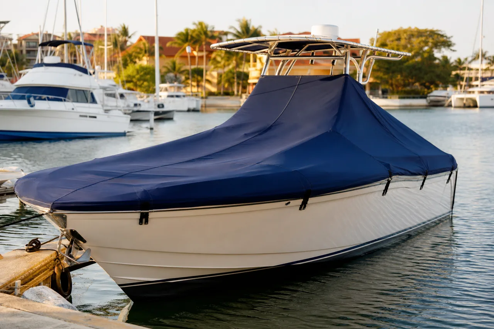

El sol, la lluvia, la sal y la suciedad deterioran rápidamente cojines, consolas y acabados. Un forro náutico bien confeccionado reduce esa exposición cuando la embarcación permanece en el muelle o almacenada, pero debe ajustarse a su forma y accesorios.
Forro a medida para un bote de 32 pies. La cotización cambia con el tipo de cobertura, lona, refuerzos, cremalleras, ventilación, herrajes y puntos de amarre.
¿Qué debe incluir un buen forro náutico?
- Medición de consola, parabrisas, T-top, asientos y accesorios.
- Patronaje y confección adaptados a la embarcación.
- Refuerzos en esquinas, herrajes y puntos de tensión.
- Sistema de sujeción adecuado para evitar movimiento excesivo.
- Solución de ventilación para reducir condensación.
- Prueba de instalación y ajuste final a bordo.
Factores que determinan el precio
1. Cobertura completa o por secciones
Un forro completo protege una superficie mayor y suele requerir más material y tiempo. Las piezas independientes para consola, sillas o proa facilitan el uso diario, pero multiplican cierres, bordes y ajustes.
2. Tipo de lona
La elección considera exposición solar, lluvia, ventilación, resistencia y peso. La cotización debe identificar el material acordado para que el cliente pueda comparar propuestas equivalentes.
3. Geometría y accesorios
T-top, antenas, radar, pasamanos, soportes y formas irregulares necesitan patrones, pasos o refuerzos específicos. Dos botes de 32 pies pueden exigir cantidades de trabajo diferentes.
4. Cremalleras, amarres y ventilación
El acceso, la forma de instalar el forro y el manejo del aire y el agua influyen en funcionalidad y costo. Estos detalles se definen durante la medición.
Forro completo o forros independientes
Para periodos largos sin uso, una cobertura completa ofrece protección integral. Si el bote sale con frecuencia, las piezas por zonas pueden instalarse con mayor rapidez. La recomendación depende de dónde se guarda, cuántas veces se usa y qué componentes necesitan mayor protección.
Cómo pedir una cotización
Comparte marca, modelo, eslora, ubicación, fotografías laterales y superiores, y explica si buscas cubrir todo el bote o solo algunas zonas. La visita permite tomar medidas y revisar puntos de apoyo sin tensionar parabrisas ni accesorios.
Preguntas frecuentes
¿Cuánto cuesta un forro para un bote de 32 pies?
La referencia es desde $7.000.000 COP. El valor final depende del alcance, material, refuerzos, sistemas de acceso, ventilación y geometría.
¿Es mejor un forro completo o por secciones?
El completo protege más superficie; las secciones son más prácticas para uso frecuente. La decisión se toma según almacenamiento y rutina del bote.
¿Por qué debe fabricarse a medida?
Un buen ajuste reduce bolsas de agua, roce y zonas expuestas, y ubica correctamente los refuerzos, amarres y ventilación.
¿Necesitas un forro para tu bote?
Envíanos la eslora, el modelo, la ubicación y fotografías para orientar el presupuesto y coordinar la medición.
Cotizar por WhatsApp